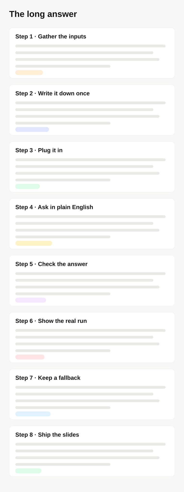

<section class="slide" id="long-page" data-section="How it works" data-title="Let long pages scroll themselves">
  <div class="split split--even">
    <div class="text">
      <div class="eyebrow">Long answers</div>
      <h2 class="title">Let long pages <em>scroll themselves.</em></h2>
      <p class="hint"><b>Tip</b>Crop the browser chrome and keep the content. Tall captures scroll slowly and loop.</p>
    </div>
    <div class="stage">
      <figure class="scrollshot"><div class="scrollshot-view"></div><figcaption><b>Sample</b>the whole answer</figcaption></figure>
      <figure class="shot inset"></figure>
    </div>
  </div>
  <aside class="notes">
    <p><b>8:20–9:00.</b> Let it scroll while you talk; don’t narrate every line.</p>
  </aside>
</section>
